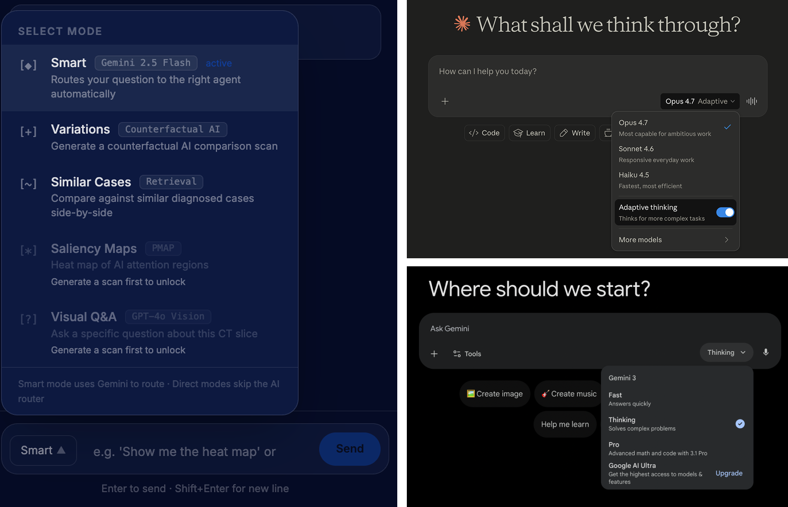
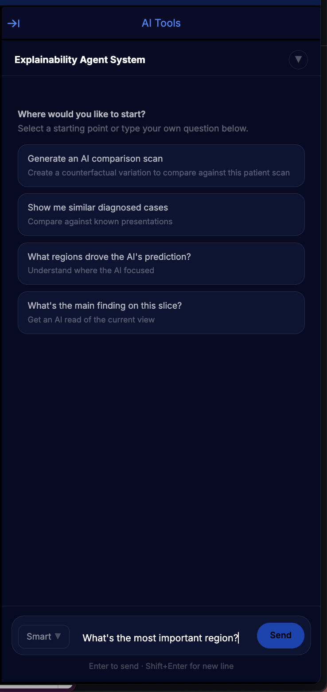

Addressing the Selection Problem in Explainable AI
This project argues that a major failure point in deployed explainable AI happens before explanation even begins: at the moment users are asked to decide which explanation technique they want. Rather than treating poor XAI uptake as a problem of explanation quality alone, the paper formalizes a different obstacle — the selection problem — and shows why technique choice cannot reliably succeed when users lack the knowledge required to map natural language uncertainty onto specific XAI methods.

// understand

This project started with a system, rather than a question. I'd been working on a multi-agent XAI tool for clinical CT viewing — a chat interface that could route a radiologist's natural language questions to different XAI agents depending on what they were asking. We used saliency for “what did the model look at?” Counterfactuals for “would it still be flagged if the nodule were smaller?” Exemplars for “what similar cases has the model seen?”
I knew it felt different from conventional XAI interfaces, because the clinician didn't have to know which technique they wanted. But every time I tried to explain why that mattered, I kept gesturing at vague things — it's more natural, it lowers the barrier, it meets clinicians where they are…
The shift happened when I started paying closer attention to the XAI adoption literature. Paper after paper documented the same pattern: clinicians ignored explanations, misinterpreted them, used them to confirm rather than scrutinize AI outputs. And the field's standard response was that the techniques need to be better.
The system we designed did something else entirely: it removed the moment when the user had to choose which technique to invoke.
The failure in deployed XAI was happening before the explanation — at the moment the user had to translate their felt uncertainty into a technique selection. And conventional interfaces required that translation, with no support, before any explanation had been produced that could help the user figure out what they wanted.
// define
I started calling it “the selection problem” in my notes.
Katelyn encouraged me to formalize the argument, to use my philosophy background.
Of course users have to translate their question into a technique selection — but is that translation actually what fails? The formalization helped me show that specifically the mapping from natural language uncertainty to technique selection requires knowledge the average user population doesn't have, and therefore the translation cannot succeed reliably by structural induction rather than user error.
I went through several rounds finding the right level of formalism. What landed was a premise/conclusion structure with mathematical notation used sparingly within prose: enough scaffolding to make the argument precise and citable, but not so much that it became inaccessible.
Formalization, I learned, is a design tool with the same kinds of tradeoffs as any other interface choice.
// develop

The orchestrator instantiation itself is Gemini 2.5 Flash, configured with function-calling schemas that encode the correspondence between query types and agents. Users see the orchestrator as “Smart Mode” in the interface; if they already know which explanation they want, they can also invoke individual agents directly. The clinician never has to see a technique-selection control unless they want to.
// explain
By the time the paper was finished, the project had inverted. I had started with GenAIxRad as the main thing and wrote the formalization to explain why it mattered. The final paper has the formalization as the central contribution and GenAIxRad as evidence that the architecture is implementable.
This is my first research paper as lead author. I'll be presenting it at the IJCAI 2026 Workshop on Explainable AI this summer in Germany!
I don't fully have words yet for what it feels like to have a paper accepted at a venue like this. More to come after the conference in August.